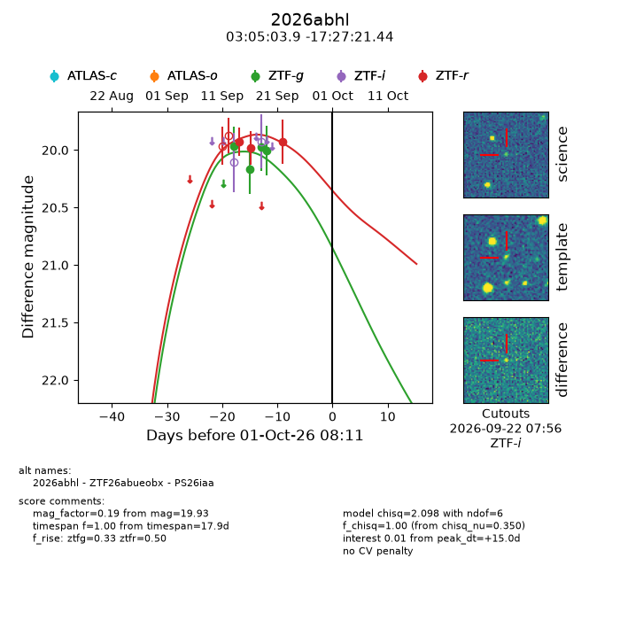
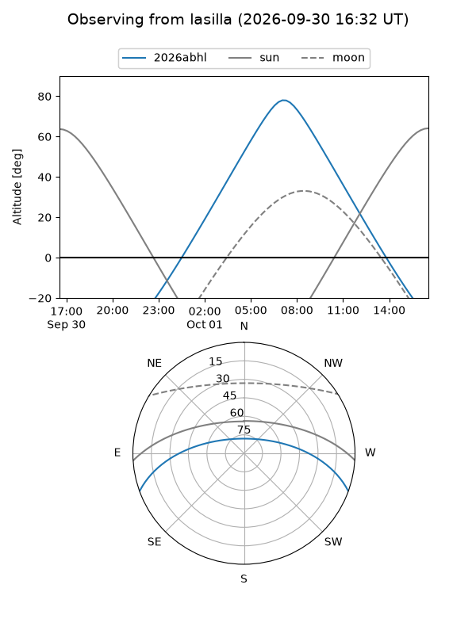
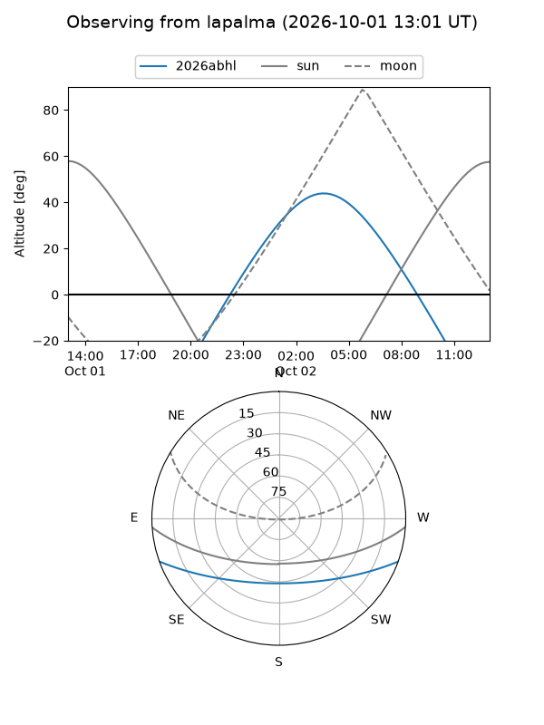
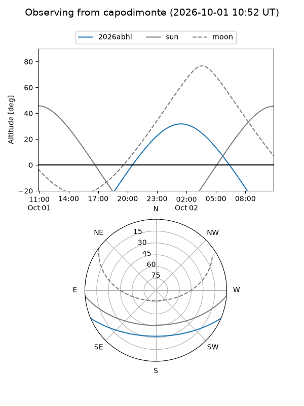
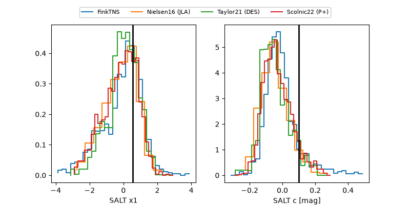

2026abhl
Target 2026abhl at 2026-10-01 08:13
Aliases and brokers:
FINK-ZTF: ztf.fink-portal.org/ZTF26abueobx
Lasair-ZTF: lasair-ztf.lsst.ac.uk/objects/ZTF26abueobx
ALeRCE-ZTF: alerce.online/object/ZTF26abueobx
YSE-PZ: ziggy.ucolick.org/yse/transient_detail/2026abhl
TNS name: wis-tns.org/object/2026abhl
Direct TNS query: direct search
alt names
ZTF26abueobx (ztf,fink_ztf)
2026abhl (tns,yse)
PS26iaa (panstarrs)
Coordinates:
equatorial (ra, dec) = 46.2660,-17.45595
equatorial (HMS+DMS) = 03:05:03.85,-17:27:21.44
galactic (l, b) = (202.5583,-57.72734)
Flags:
TNS type: nan
peak dt: +15.0
Photometry:
last ztfg=20.00, ztfr=19.93
4 ztfg, 3 ztfr detections
Lightcurve

Visibility



Additional plots
